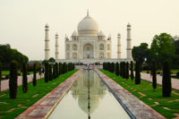
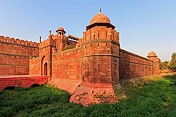
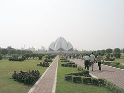
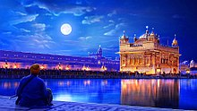

ATITHI DEVO BHAVA

The Taj Mahal is an ivory-white marble mausoleum on the south bank of the Yamuna river in the Indian city of Agra. It was commissioned in 1632 by the Mughal emperor, Shah Jahan (reigned from 1628 to 1658), to house the tomb of his favourite wife, Mumtaz Mahal. The tomb is the centrepiece of a 17-hectare (42-acre)[5] complex, which includes a mosque and a guest house, and is set in formal gardens bounded on three sides by a crenellated wall.
 The Taj Mahal was designated as a UNESCO World Heritage Site in 1983 for being "the jewel of Muslim art in India and one of the universally admired masterpieces of the world's heritage". Described by Nobel laureate Rabindranath Tagore as "the tear-drop on the cheek of time", it is regarded by many as the best example of Mughal architecture and a symbol of India's rich history. The Taj Mahal attracts 7–8 million visitors a year. In 2007, it was declared a winner of the New7Wonders of the World (2000–2007) initiative.The Red Fort is a historic fort in the city of Delhi in India. It was the main residence of the emperors of the Mughal dynasty for nearly 200 years, until 1857. It is located in the center of Delhi and houses a number of museums. In addition to accommodating the emperors and their households, it was the ceremonial and political centre of the Mughal state and the setting for events critically impacting the region.
Constructed in 1639 by the fifth Mughal Emperor Shah Jahan as the palace of his fortified capital Shahjahanabad, the Red Fort is named for its massive enclosing walls of red sandstone and is adjacent to the older Salimgarh Fort, built by Islam Shah Suri in 1546. The imperial apartments consist of a row of pavilions, connected by a water channel known as the Stream of Paradise (Nahr-i-Bihisht). The fort complex is considered to represent the zenith of Mughal creativity under Shah Jahan,[citation needed] and although the palace was planned according to Islamic prototypes, each pavilion contains architectural elements typical of Mughal buildings that reflect a fusion of Timurid and Persian traditions. The Red Fort’s innovative architectural style, including its garden design, influenced later buildings and gardens in Delhi, Rajasthan, Punjab, Kashmir, Braj, Rohilkhand and elsewhere.
 The fort was plundered of its artwork and jewels during Nadir Shah's invasion of the Mughal Empire in 1747. Most of the fort's precious marble structures were subsequently destroyed by the British following the Sepoy Mutiny of 1857. The forts's defensive walls were largely spared, and the fortress was subsequently used as a garrison. The Red Fort was also the site where the British put the last Mughal Emperor on trial before exiling him to Rangoon in 1858. Every year on the Independence day of India (15 August), the Prime Minister hoists the Indian "tricolour flag" at the main gate of the fort and delivers a nationally-broadcast speech from its ramparts.The Lotus Temple, located in Delhi, India, is a Bahá'í House of Worship that was dedicated in December 1986, having been completed for a total cost $10 million. It serves as the Mother Temple of the Indian subcontinent. Notable for its flowerlike shape, it has become a prominent attraction in the city. Like all Bahá'í Houses of Worship, the Lotus Temple is open to all, regardless of religion or any other qualification. The building is composed of 27 free-standing marble-clad "petals" arranged in clusters of three to form nine sides, with nine doors opening onto a central hall with height of slightly over 40 metres and a capacity of 2,500 people. The Lotus Temple has won numerous architectural awards and been featured in hundreds of newspaper and magazine articles. A 2001 CNN report referred to it as the most visited building in the world.
Inspired by the lotus flower, the design for the House of Worship in New Delhi is composed of 27 free-standing marble-clad "petals" arranged in clusters of three to form nine sides. The nine doors of the Lotus Temple open onto a central hall slightly more than 40 metres tall that can seat 1,300 people and hold up to 2,500 in all. The surface of the House of Worship is made of white marble from Penteli mountain in Greece, the same marble from which many ancient monuments (including the Parthenon[) and other Bahá'í Houses of Worship are built. Along with its nine surrounding ponds and the gardens, the Lotus Temple property comprises 26 acres
Sri Harmandir Sahib (lit. "the abode of God"), also known as Golden Temple and the Darbar Sahib, is the holiest Gurdwara and the most important pilgrimage site of Sikhism. It is located in the city of Amritsar, Punjab, India. The temple is built around a man-made pool (sarovar) that was completed by Guru Ram Das in 1577.[4][5] Guru Arjan – the fifth Guru of Sikhism, requested Sai Mian Mir – a Muslim Pir of Lahore to lay its foundation stone in 1589.[1] In 1604, Guru Arjan placed a copy of the Adi Granth in Harmandir Sahib, calling the site Ath Sath Tirath (lit. "shrine of 68 pilgrimages").
The temple was repeatedly rebuilt by the Sikhs after it became a target of persecution and was destroyed several times by the Muslim armies from Afghanistan and the Mughal Empire. The army led by Ahmad Shah Abdali, for example, demolished it in 1757 and again in 1762, then filled the pool with garbage. Maharaja Ranjit Singh after founding the Sikh Empire, rebuilt it in marble and copper in 1809, overlaid the sanctum with gold foil in 1830. This has led to the name the Golden Temple. The temple is spiritually the most significant shrine in Sikhism. It became a center of the Singh Sabha Movement between 1883 and 1920s. In the early 1980s, the temple became a center of conflict between the Indian government led by Indira Gandhi, some Sikh groups and a militant movement led by Jarnail Singh Bhindranwale seeking to create a new nation named Khalistan. In 1984, Gandhi sent in the Indian Army as part of Operation Blue Star, leading to deaths of over 1,000 militants, soldiers and civilians, as well as causing much damage to the temple and the destruction of Akal Takht.